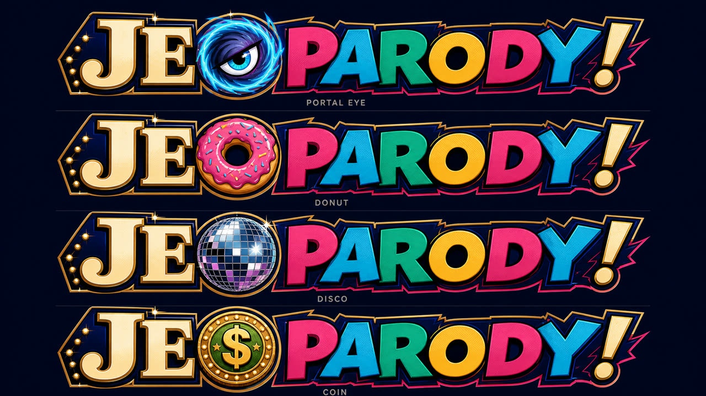

Read it before you decorate it.
The silhouette must say JeoPARODY in one glance at favicon, header, cabinet-marquee, and poster scale. The logo cannot require lore to be legible.
JEOPARODY CREATIVE DEPARTMENT / CLEARANCE LEVEL: QUESTIONABLE
Identity Lab 001
The first O is a living station identity: portal, donut, eye, counterfeit coin, eclipse, disco ball. The second O stays fixed as evidence of the letter that turned respectable game-show authority into PARODY.
Three finalist directions
The council's verdict
The silhouette must say JeoPARODY in one glance at favicon, header, cabinet-marquee, and poster scale. The logo cannot require lore to be legible.
The first O earns motion and costumes. Every other letter holds formation, so surprise never destroys recognition.
Warm broadcast ivory gives JE institutional weight. Comic magenta gives PARODY the punchline. Gold identifies the unauthorized second O.
Texture, jokes, lights, and motion live in the world around the logo. The core mark keeps enough discipline to become iconic.

Recognition stress test
Channel O wardrobe
Episode art may dress the first O, but every costume preserves a circular silhouette, dark center, and high-contrast rim.
Provisional front-runner
The long-lost twin nobody knew existed, including the twin. He has Alex's polish, none of his emotional zoning permits, and a grievance filed in triplicate with the Canadian Broadcasting Corporation.
“Correct. Disturbingly correct. We will be reviewing how you obtained that information.”
Writers' room shortlist
Best balance of recognizable silhouette, independence, and mystery. Sounds like a man whose passport has opinions.
The counterfeit cousin. His accent mark relocates whenever a fact-checker approaches.
The regional substitute. Arrived to cover one episode in 1987 and has interpreted silence as renewal.
The elegant alias. Less obvious parody, more room for the reveal that every credential was printed at a pharmacy.
Art synthesis
Bold silhouettes, directional shadows, expressive close-ups, panel-like transitions.
Purposeful chunky geometry and sprite logic, never a low-resolution filter.
Caricature, visual footnotes, marginal jokes, counterfeit institutional authority.
Current room vote
CHANNEL O / XANDER TREFLECK The most ownable bridge between prestige trivia, parody, mystery, and the interchangeable O.